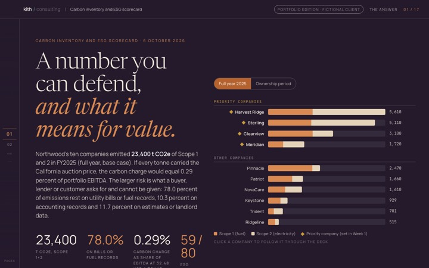
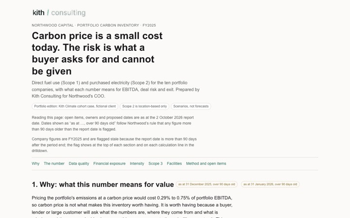
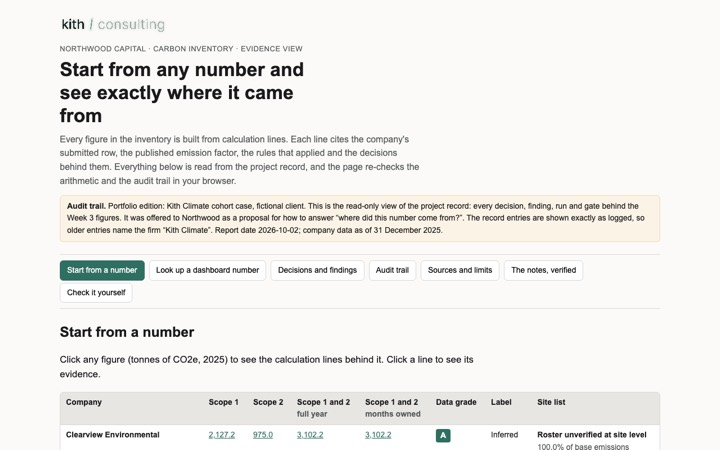

Week 3 of 6, Climate Work Residency
Carbon inventory and ESG scorecard
What are the ten companies' Scope 1 and 2 emissions, can Northwood defend the number to a buyer or LP, and what should it act on?
Highlights

Client deck: the answer
Leads with the number, then shows why carbon price is small and buyer questions are the risk.
Open
Emissions dashboard with drilldown
Every company total splits into sites, fuels and source rows, so a sceptic can test any figure.
Open
Evidence view: the audit trail
The decisions, findings and checks behind every figure, open to a sceptical reader.
OpenThe case
Northwood needed a carbon number it could defend. The ten companies emitted about 23,400 t CO2e of Scope 1 and 2 in calendar 2025 (full year, base case; 21,800 t over Northwood's ownership period). Carbon cost is small, though: priced at the California auction price it is 0.29 percent of portfolio EBITDA.
The real exposure is what a buyer, lender or customer asks for and cannot be given. So the work pairs the inventory with an ESG scorecard that says where to act and where to collect evidence. Every figure traces to a source row, and Northwood gets the method and re-run steps to update it without Kith.
All deliverables
Each opens in a new tab, in the Kith Climate style it was delivered in.
- Week 3 deliverables portalOne page holding all six documents, so the set works on its own.
- Client deck and ESG scorecardThe main deliverable: the answer, the scorecard and what to do.
- Emissions dashboardInteractive inventory down to the site and source row.
- Evidence viewThe read-only audit trail of decisions, findings, runs and gates behind the figures.
Data and method
The method notes, data and re-run steps that let the client reproduce the work without us.
- Methodology noteHow the inventory is calculated and where each judgment call is recorded.
- Re-run guideThe steps for Northwood to update the inventory next quarter without Kith.
- Reference data pack guideWhere each outside number (emission factors and similar) comes from, in plain English.
How it was built
- Every tonne is a reported quantity times a published factor. Lines run through a ledger of 529 lines, with each figure linked to its parent and source row.
- Scope 2 is location-based (regional grid averages). Market-based is not calculated because no company reported contract data; the re-run guide says how to add it.
- Fourteen method rules were locked before the inventory was built. Each later amendment is logged, and decisions taken with results in view are named in the methodology note.
- The calculation was rebuilt independently from the raw templates. All 376 base and 153 sensitivity lines agree, and the run log is hash-chained so an edited entry shows.
- Reviewers and a code-review agent tested the build at each stage and raised 157 findings; all but 10 were closed. One caught a gate check printing 'ALL PASS' while three checks did not exist. It was fixed.
- Four checkpoints were signed. The last one, covering the client deck and scorecard, was never run because Week 4 began. The deck was independently reviewed later for this portfolio, and says so.
My part
- I set the framing: lead every output with the financial risk, and require an ESG scorecard even though the course slides called it optional.
- I ruled on method calls, including reporting Scope 2 as location-based only and carrying two unusual fleet figures as submitted with a flag.
- I gave ten comments on the fourth draft of the client deck that shaped the final one, and signed the four checkpoints that ran.
The AI's part
- Claude Code built the calculation, the dashboard, the client deck, the scorecard and the evidence view.
- It also wrote the checks, ran the independent recalculation and the reviewer packets, and recorded the findings.
Across the engagement
From Week 2. The Week 2 audit supplied the ten companies, the 138 facility rows and a provisional rule for late data. The priority four from Week 1 stay marked throughout.
Into Week 4. Week 4 carried these emissions (23,437 t full year, 21,778 t over the ownership period) into its exposure and materiality model unchanged.